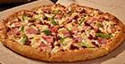
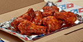
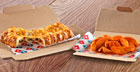
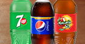
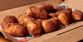
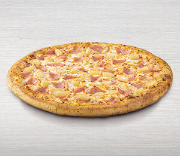
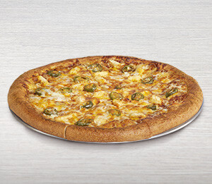
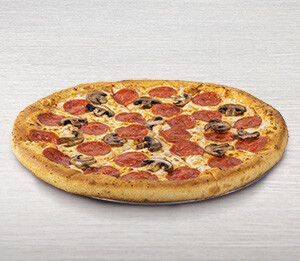

Bienvenido a dominos
Opciones
-  Pizza
-  Pollo
-  Adicionales
-  Bebidas
-  Postres
Typos de pizzas
- 

- 
- 
Nuestra propaganda
Nuestra historia
Domino's Pizza es una reconocida cadena de restaurantes de comida rápida especializada en pizzas. Su historia se remonta a 1960, cuando Tom Monaghan y su hermano James compraron una pequeña pizzería llamada "Dominick's" en Michigan, Estados Unidos. Tom Monaghan cambió el nombre a Domino's Pizza y comenzó a expandir el negocio. Con el tiempo, desarrollaron un enfoque innovador en la entrega a domicilio, centrándose en la velocidad y la eficiencia. Esto se convirtió en una parte integral de la identidad de la marca Domino's.